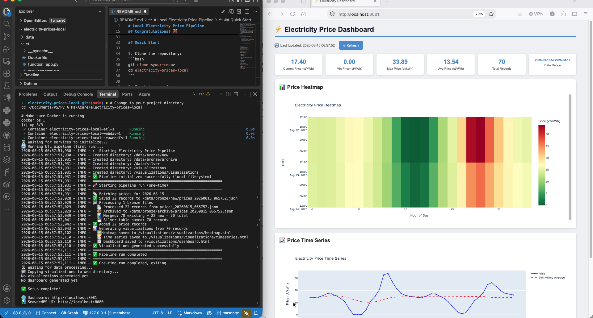

Electricity Prices — Local
Docker Compose, Python, and Plotly — same aWATTar data, running entirely on a laptop. The version that actually shipped its dashboard.
Architecture
A Docker Compose stack: a Python ETL service (fetch → process → merge → visualize), and an Nginx container serving the dashboard and charts. Data flow: aWATTar API → raw JSON in data/bronze/new/ → flattened and merged into data/silver/prices.parquet → Plotly heatmap, time-series chart, and dashboard HTML written out and served at localhost:8081. Runs once on startup, then daily on a schedule.
Three real bugs, found and fixed
Stale data could silently outrank a corrected price

Screenshot of the working ETL UI, showing data processing and visualization steps.The merge step deduplicated on timestamp using pandas' default keep='first' — so if an hour was already stored from an earlier fetch, that older row always won over a fresh one for the same hour. A corrected price of exactly 0 from a later fetch could never overwrite a stale non-zero value, since 0 was easy to mistake for "missing" rather than genuine data. Fixed by switching to keep='last', and by replacing a fragile mixed truthy/is not None filter check with an explicit check that treats 0 as valid.
Charts rendering as blank iframes
The dashboard's iframes requested /visualizations/heatmap.html and /visualizations/timeseries.html, but the chart-generation code was writing those files one directory too high — directly into Nginx's web root rather than the visualizations/ subfolder the HTML was actually requesting. Fixed by pointing the chart writers at the correct subdirectory.
Emoji rendering as garbled text
The generated dashboard HTML had no <meta charset="UTF-8"> tag and was written without an explicit encoding, so the browser guessed the wrong one and turned ⚡ into mojibake. Fixed by adding the meta tag and writing the file explicitly as UTF-8.
Result
Verified end-to-end after a full reset and rebuild: the dashboard's stats card correctly reflects the true min/current price (including genuine 0.00 values), both charts render inline, and all symbols display correctly. Unlike the Azure side of this project, the visualization step here actually shipped — a working heatmap, time series, and stats dashboard, live at localhost:8081.
Where it stands
Working local pipeline with a real dashboard, three genuine bugs found and fixed along the way — none of them Azure-related, all of them the kind of thing that happens in any codebase. The one thing left honestly incomplete: no attempt yet at real SeaweedFS/S3-API parity with the Bee Haven open-source build. That's a reasonable next step if this project gets picked back up, not a claim being made now.
📓 Full technical deep-dive: stack details and all three bugs with full code